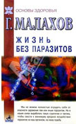

Вселенский кошмар
Дата: 2007-06-01 08:50:00
Тема: Курьёзы медицины
Все мы знаем, какую большую роль в сознании людей играют СМИ. Федеральные каналы, предоставляющие время передачам о здоровье, влияют на массы больше, чем вся пропаганда здорового образа жизни, исходящая от медицинской общественности. Идеалом, к которому стремятся все лженаучные, либо просто недоразвитые медицинские телепередачи, является ток-шоу Г.П. Малахова «Малахов+». Деятельность «всенародного целителя» не заканчивается лишь телевидением — дополнением к программе является книга «Жизнь без паразитов».
Все мы знаем, какую большую роль в сознании людей играют СМИ. Федеральные каналы, предоставляющие время передачам о здоровье, влияют на массы больше, чем вся пропаганда здорового образа жизни, исходящая от медицинской общественности. Рекомендации Вашего участкового терапевта, специализированные школы для пациентов с бронхиальной астмой, гипертензией или сахарным диабетом, беременных, федеральные национальные программы — ничто в сравнении со Словом Человека, которого показывают по Телевизору и которому доверяют люди (начинают они это делать прямо в студии). Не стоит обольщаться на предмет того, что люди сортируют в своей голове информацию и делают только верные выводы. Послушайте разговоры в поликлинике, маршрутном такси, и Вы поймёте, что если Вы сомневаетесь в получаемой из Телевизора информации, то Вы, скорее всего, исключение, чем обычный российской гражданин.

Идеалом, к которому стремятся все лженаучные, либо просто недоразвитые медицинские телепередачи, является ток-шоу Г.П. Малахова. И, чтобы показать всю глубину знаний этого человека и подчеркнуть обоснованность его положения в сознании Людей-Которые-Смотрят-Телевизор, приведём строки из его книги «Жизнь без паразитов». В труде говорится не только о паразитологии, какой её представляет автор, но и приведены широкие медицинские и даже философские проблемы и пути их решения. Начнём с понятия о микроорганизмах вообще:
«В организме человека живут антагонисты — бактерии и грибки. Когда человек беспорядочно, обильно, сладко питается, он создает в организме условия для накопления слизи. На этой слизи начинают размножаться бактерии и грибки. Возникает простуда, воспаление горла (слизь имеет свойство скапливаться вверху организма). Лечение — прием антибиотиков. Антибиотики делают из плесени — грибков. В итоге антибиотики уничтожают бактерии (вредные и полезные) и… служат подкормкой для грибков. Грибки, больше не сдерживаемые своими “естественными” противниками — бактериями, размножаются в чрезмерном количестве и вызывают появление грибковых заболеваний». Венерология (выдержки):
«Против самих хламидии эффективным является прием “тройчатки”: полынь, керосин, спиртовая настойка чеснока. Не выносят они голода на моче с втиранием в тело старой урины. Использование промываний половых органов водой с кислым вкусом, парные процедуры с полынными, березовыми, дубовыми, еловыми вениками — прекрасное средство для их уничтожения». Антибиотикотерапия:
«Как действует антибиотик? Начался кризис — температура организма повышается, появляются неприятные явления, указывающие на активацию иммунной системы. Человек принимает антибиотик, который убивает патогенные микроорганизмы, нормализует температуру и снимает все симптомы начинающегося оздоровительного кризиса (боли, слабость и т.п.). Казалось бы, положительные явления произошли с организмом, но рассмотрим этот процесс глубже.
- Поработав в организме, сам антибиотик должен выводиться вон.
- Должны выводиться и убитые им микробы, что на самом деле происходит медленно. Это является причиной трупной интоксикации организма.
- После нескольких приемов антибиотиков, организм “разучивается” быстро и мощно разворачивать свою иммунную защиту. Он уже не так активно вырабатывает иммунные клетки, запаздывает с подъемом температуры, что делает эти клетки менее активными.
Одним словом, здесь действует все тот же непогрешимый биологический закон — функция за ненадобностью сворачивается, атрофируется. Именно это делают с иммунной системой антибиотики.
- В то же время бактерии, ранее успешно подавляемые антибиотиками, так видоизменяются, что в дальнейшем становятся устойчивыми к их действию и вновь атакуют организм. Перед такой атакой он становится бессилен.
- В организме человека живут бактерии и грибки. Антибиотики подавляют бактерии, но не действуют на грибки. Наоборот, антибиотик является для них пищей! В результате применения антибиотиков исчезают бактериальные инфекции, но еще шире и мощнее возникают грибковые инфекции. Уходя от одной напасти, человек попадает в лапы другой.
- Антибиотики подавляют нормальную микрофлору организма и тем самым способствуют (после лечения) возникновению дисбактериоза».
Новый взгляд на эпидемиологию и генетику:
- «Если в роду кто то болел чесоткой, то потомки могут страдать различными кожными болезнями.
- Если в роду кто то болел гонореей, то потомки могут страдать от различных опухолей (липомы, миомы, бородавки и прочие опухоли).
- Если в роду кто то болел сифилисом, то потомки могут страдать от разного рода язв в любых органах.
- Если в роду кто то болел туберкулезом, то потомки могут страдать от более тяжелой формы — сочетания опухолей с язвами».
Нечто ещё:
«Зачастую врачи не могут найти причину заболевания. С изгнанием сущностей, или “бесов”, многие болезни исчезают сами или начинают излечиваться. Особенность состоит в том, что негативная энергетика может быть наложена на что угодно, даже на иконы. У меня была одна женщина, которая молилась иконе, купленной на рынке, а ей становилось плохо, потому что на икону был наложен образ ведьмы». Кроме того, «книга» содержит главы, посвящённые снятию порчи, энергетическому вампиризму вперемешку с рекомендациями по лечению различных инфекционных болезней. Есть глава «Бесы и способы избавления от них». Более всего книга походит на перевод какого-то кодекса ведьм, дневник средневекового алхимика, причём алхимика самого тёмного средневековья. Первый тираж книги в 2001 г.составил 200000 экземпляров. Скорее всего, это не последнее творение автора. Свои труды он неоднократно прямо или косвенно рекламировал в известной телепередаче, ссылки на книгу можно найти на целом ряде Интернет-ресурсов, связанных со здоровьем человека, on-line консультациями. В данной статье представлены выдержки нескольких страниц произведения «Жизнь без паразитов», общее число страниц — 220…
В.В. Привольнев
Полка в одном из книжных магазинов.
Ссылки по теме:
Эта статья опубликована на сайте Антибиотики и антимикробная терапия
http://antibiotic.ru/
URL этой статьи: http://antibiotic.ru/index.php?article=1573 |
|
|